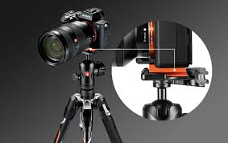
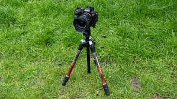
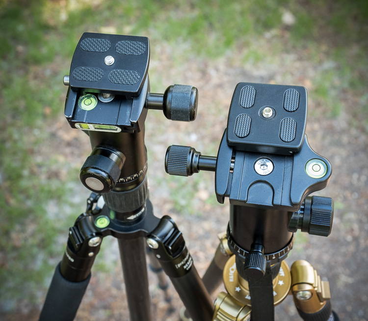

Les trépieds de nos jours
|

1.trépieds complets |

2.Peak Design Travel Tripod |

3.manfrotto Element MII Traveler |
|---|---|---|
|

4.K&F Concept 64 inch/161cm Camera Tripod |

5.Joby GorillaPod 3K PRO Stand |

6.3 Legged Thing Winston 2.0 |
Un trépied reste un accessoire essentiel pour stabiliser un appareil photo, une caméra ou même un smartphone.
Même si les appareils récents ont de meilleures stabilisations internes, un trépied reste souvent indispensable pour la stabilité parfaite et la précision de cadrage.